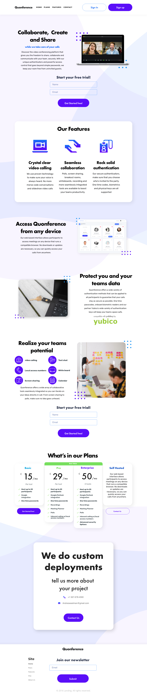
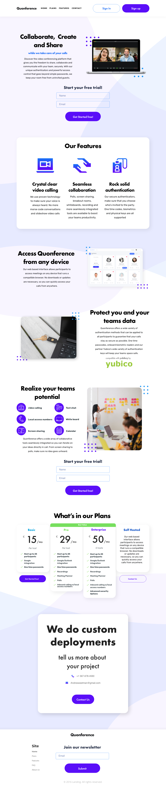

Designing a landing page for Quonference to inspire trust and convert traffic into sales
BriefBrief
In 2022, at the height of the Pandemic, I had the chance to work with Quonference, a video conferencing progressive web-app with an emphasis on a high level of security. During this project I had to develop a sense of trust and professionalism with potential users. Quonference had many unique features such as one time passwords, physical security keys and high level encryption, and this is the basis of the direction we went with for all of the designs.
Goals (Derived through Research)Goals (Derived through Research)
- Develop a brand that establishes a certain level of trust with users
- Accurately communicating Quonference's unique features
- Convert visitors into users
- Making a foundation of branding on which we could build a ui design system for the web app
Design ProcessDesign Process
Before Proposing any designs I made sure to do extensive market research to better identify our niche. I looked at many different competitors on the market.
Once we had an idea of what angle the best apps in the conferencing space were taking, we found a gap in the market that allowed us to develop our own user personas.
This step was essential to conduct our user research, with a better idea of what we imagined our end users to look like we crafted 5 focus groups of 10 users in different idustries ranging from education to govermental agencies that required a high degree of security.
Through interviews with these focus groups we where able to identify what the users needs were. This is what we found:
- Users wanted an app that had a high amount of security without being cumbersome. Many users had faced frustrations with spending a long amount of time configuring our competitors apps to suit their specific needs.
- Many of our target demographic described pain points with having an app that had many features but frustrating level of useability.
- Almost all of our competitors struggled with conveying their high level of security. Users did not neccesarily feel safer using these apps over market leaders like ZOOM or Microsoft teams.
- Users in different sectors had different needs in terms of scalability. Some users needed our app to do webinars, while certain users were looking for a solution for smaller gatherings such as meetings or a classromm enviroment.


 
